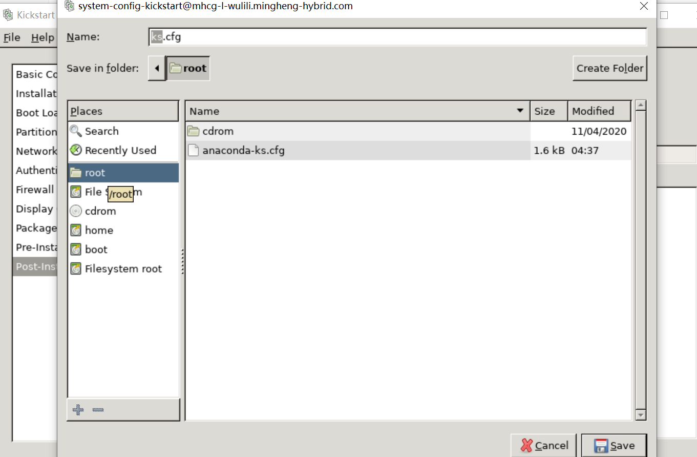

PXE自动化部署centos7
PXE自动化部署centos7
环境准备
安装httpd,dhcp,tftp-server,syslinux,system-config-kickstart
在 /var/www/html路径下新建 centos/7/os/x86_64（mkdir /var/www/html/centos/7/os/x86_64 -p）
将centos镜像挂载至mnt目录下，拷贝所有文件至/var/www/html/centos/7/os/x86_64目录下 (cp -rv /mnt/* /var/www/html/centos/7/os/x86_64/)
关闭防火墙，关闭selinux,启动httpd服务，确保网页可以访问到x86_64目录下的所有文件，如图所示
配置DHCP
制作DHCP文件，cp /usr/share/doc/dhcp-4.2.5/dhcpd.conf.example /etc/dhcp/dhcpd.conf
按如下要求修改dhcpd.conf文件 ^注释1
1 | |
在客户端使用dhclient -s serverip ^注释2命令来测试能否正常从dhcp server自动获取地址
system-config-kickstart文件制作
基本设置，语言，时区，root密码等，勾选text mod后可以使用纯文本界面安装，时区 语言可以等文件制作完毕后手动修改
选择安装源，路径选择网页访问路径
选择安装新的启动引导，使用net.ifnames=0将网卡名称从ens33修改为eth0
自定义分区，按实际需求分配
网络按照实际需求分配
关闭防火墙和selinux
选择需要安装的软件包（此处有BUG，需要将yum源的名称改成“development”才能正常显示）
安装前预配置
安装后执行的命令
将文件保存至root家目录，命名为ks.cfg

在%post %end区域间可以写入安装系统后需要执行的命令
在/var/www/html下新建ks目录，将制作完毕的ks文件放至/var/www/html/ks目录下，打开网页 确保可以通过网页访问ks文件^注释3
准备PXE启动相关文件
1 | |
最终目录列表如下
1 | |
准备启动菜单
1 | |
启动tftp服务，使用客户端测试tftp
客户端测试
本博客所有文章除特别声明外，均采用 CC BY-SA 4.0 协议 ，转载请注明出处！